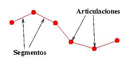
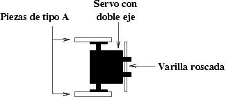
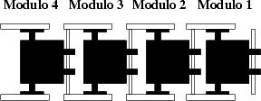
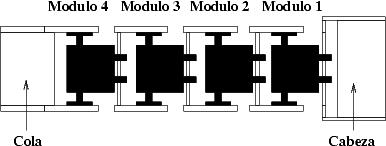
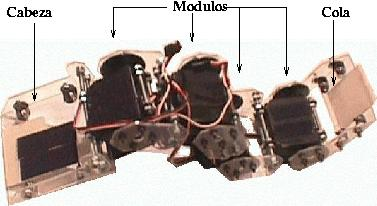
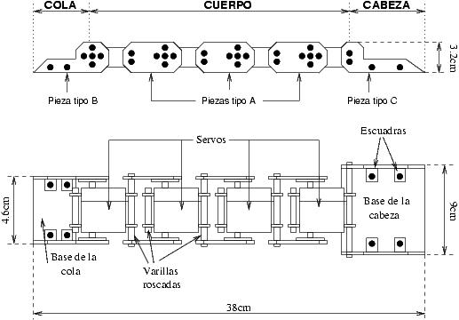

Lo que se quiere construir es un conjunto de articulaciones unidas por unos segmentos. El modelo es el siguiente:

Para las articulaciones se han empleado servomecanismos del tipo Futaba 3003, añadiendo un doble eje. Para los segmentos se han construido unas piezas, denominadas piezas de tipo A.
Un servo de doble eje, junto con dos piezas de tipo A, constituye un módulo. Un esquema visto desde arriba es el siguiente:
Uniendo varios módulos se consigue crear los gusanos de la longitud que se quiera. CUBE 2.0 está
constituido solo por 4 módulos, pero se podrían colocar los que se quisieran.

Finalmente se añaden unas piezas para formar la cola y la cabeza del gusano:

Con esto se consigue que el sistema sea expandible mecánicamente. En la foto de la izquierda se muestra
la estructura final de CUBE 2.0 y en la de la derecha se pueden ver con
más detalle dos módulos unidos:
 |
 |
A continuación se muestra un esquema completo:
